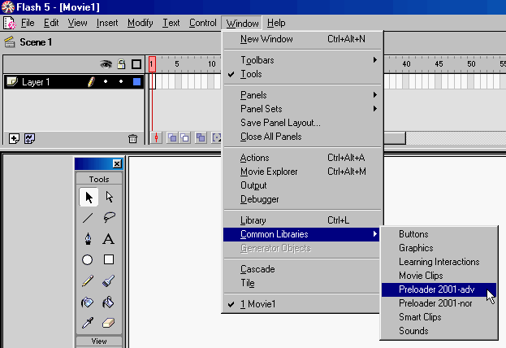
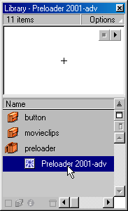
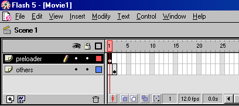
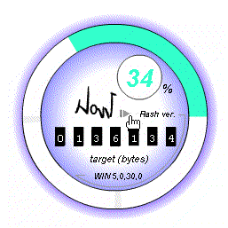

(I) Intro
| author | CTLeang |
| CTLeang@i.am | |
| homepage | http://www.CTLeang.com |
| generate | Tuesday, January 2, 2001 1:09 AM |
| file version | Flash 5 |
| file type | Preloader |
| file usage | Plug & Play |
| code name | Preloader 2001 |
| skill level | Beginner |
| previous ver. | Preloader v5 (plug&play) // 1.0 |
(II) Package
- the zip file containing :
1. Preloader 2001-adv.fla
2. Preloader 2001-nor.fla
(adv : advance version & nor : normal version)
3. readme.html
4. readme.html related GIF-graphics
(III) 2 Versions
// Normal version
- 3KB filesize on output.
- circular preloader progress bar & percent text.
// Advance version
- 5KB filesize on output.
- circular preloader progress bar & percent indicator.
- current bytes-remaining, total file size, & Shockwave Flash version indicators.
- the font I used here is "_typewriter"(to minimize the total file
size).
- Best suite monitor 17 inch with 1024 x 768 resolution or higher;
otherwise the texts will become blur.
advantage : these preloaders suite movie of any background
colour.
limitation : these preloaders can handle SWF <10MB filesize.
(IV) Usage
1. copy 2 files : "Preloader 2001-adv.fla" & "Preloader
2001-nor.fla" into following location :
C:\Program Files\Macromedia\Flash
5\Libraries
(no need to repeat this step in future after the 2 FLAs
already been copied into the "... ...\Libraries")
2. launch M.Flash5, locate as following :

3. Press either 'Preloader 2001-adv' or 'Preloader 2001-nor' to yield the small window below.

3. drag & drop the preloader to the stage
(tips : to centerize the preloader,
save movie, exit, reopen,
don't
move the stage, now "cut" the preloader & "paste" it
again)
4. place preloader in frame 1
(occupy only 1 frame length, hide it after frame 1)
5. your movie should starts from frame 2

6. The preloader will start to "PLAY" frame 2 once the entire movie loaded complete.
(V) Test
method 1 : In Flash5, press 'Ctrl+Enter' for twice to test for streaming movie
effect.
method 2 : Upload the SWF to internet, you'll see the actual result.
(VI) Screenshots

- above images are intermediate loading scenes of the preloaders.
- the first 2 images are of preloader(adv) & the third image is of preloader(nor)
(VII) My Comments
- so now we can have the cool circular preloading bar.
(analyse my movie, get some idea about "masking" to do
this...)s
- could you see the word "NOW LOADING" ?
- I'm not discuss the internal scripts here, as I emphasize : this's a plug&play
stuff.
- goodbye & goodluck.
- end -